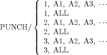

| 11.2. The PUNCH Statement | ||
|---|---|---|
 | Chapter 11. Input/Output Statements in the APT Language |  |
| 11.2. The PUNCH Statement | ||
|---|---|---|
| | Chapter 11. Input/Output Statements in the APT Language | |
The canonical forms of scalars and surfaces, including large surfaces, may be punched into a hexadecimal format by means of the PUNCH statement.
The general format of the PUNCH statement is as follows.

PUNCH/ 1, A1, A2, A3, ...
Causes the scalar of surface (including large surface) quantities A1, A2, A3, etc., to be punched into hexadecimal format.
PUNCH/ ALL
Causes all of the scalar and surface variables currently defined to be punched into hexadecimal format.
PUNCH/ 2, A1, A2, A3, ...
Causes the scalar quantities A1, A2, A3, etc., to be punched into hexadecimal format.
PUNCH/ 2, ALL.
Causes all currently defined scalar quantities to be punched into hexadecimal format.
PUNCH/ 3, A1, A2, A3, ...
Causes the surface quantities A1, A2, A3, etc., to be punched into hexadecimal format.
PUNCH/ 3, ALL
Causes all currently defined surfaces to be punched into hexadecimal format.
| |  | |
| Chapter 11. Input/Output Statements in the APT Language |  | 11.3. The READ Statement |